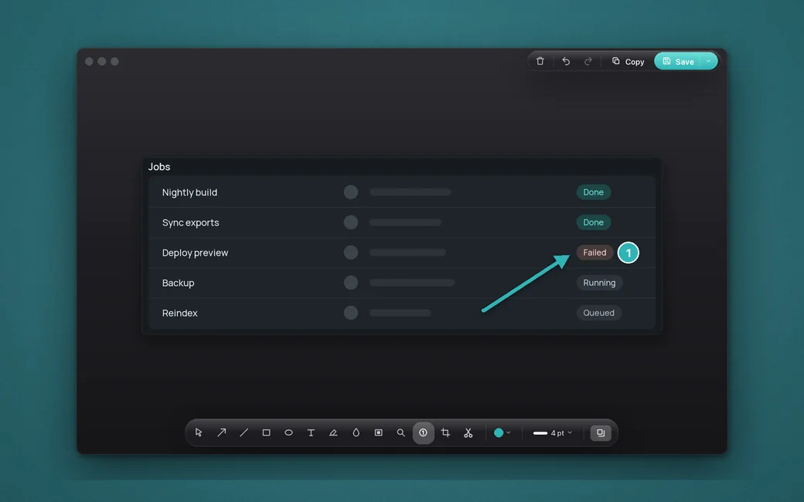

Capture and annotate
Capture. Mark it up.
Area, window and full screen with the shortcuts you already know, a magnifier for pixel exact edges and a floating thumbnail. While you drag, ⌘C, ⌘S, ⌘P and ⌘B copy, save, pin or cut out the background right away.
The slim editor draws arrows, shapes, text, highlights, spotlight, magnify, blur and step numbers, each on a single key. It also opens the PNG, JPEG or MP4 files you already have.